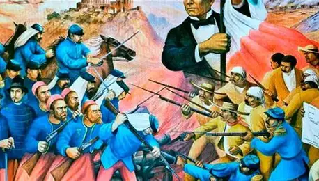
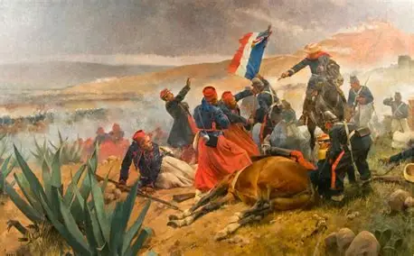
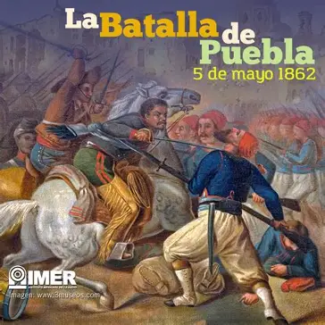

El asalto frontal: Confiados en su superioridad militar y en su fama de invencibles, los franceses lanzaron un ataque directo contra las posiciones fortificadas de los mexicanos: los fuertes de Loreto y Guadalupe. La resistencia mexicana: A pesar de estar en desventaja numérica y contar con un armamento mucho más limitado, las tropas mexicanas repelieron con valentía tres embestidas consecutivas del ejército invasor. El factor climático: En medio de los combates comenzó a llover fuertemente; el terreno se volvió fangoso, lo que dificultó el avance de la infantería francesa y el uso de su artillería, dando ventaja a la defensa local. La retirada francesa: Al sufrir numerosas bajas y comprobar que no podían romper las defensas de los fuertes, las fuerzas invasoras se vieron obligadas a suspender el ataque y ordenar la retirada.


